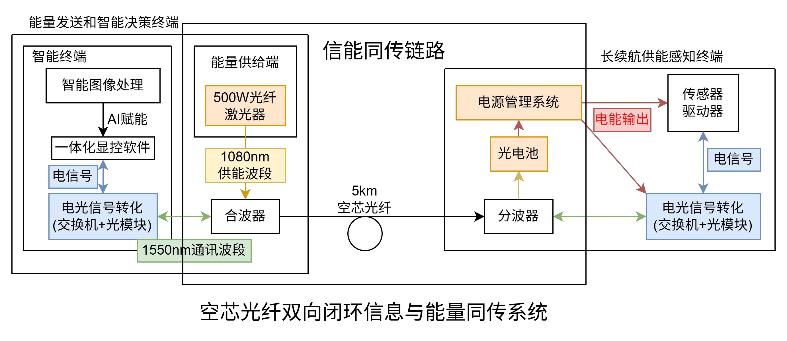
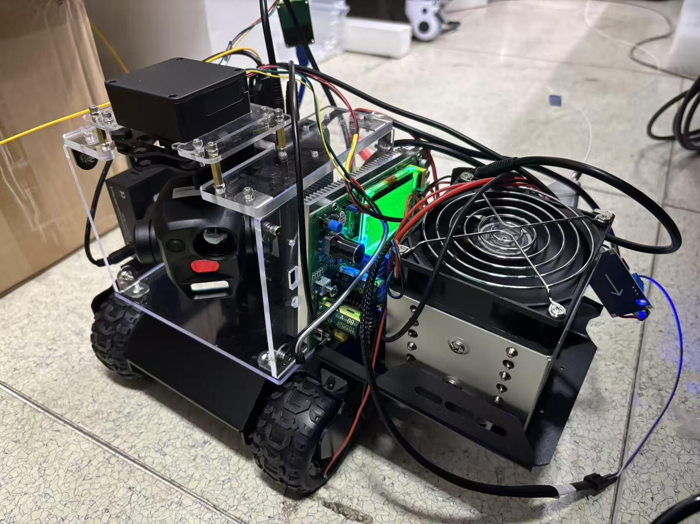

项目概述
针对海底光缆巡检、水库大坝监测等水下基础设施运维需求，设计了一种基于光纤信能共传的深海智能无人车。通过单根空芯光纤实现1080nm激光供能与1550nm双向通信，解决传统水下设备续航短、成本高、无法长期驻守的痛点。
核心指标：已完成5km光纤供能实测，系统输出1.952kW，光电转换效率43.74%（中国赛宝实验室认证）。
系统架构

空芯光纤双向闭环信息与能量同传系统
地面端通过波分复用器将1080nm高功率激光与1550nm通信光合束，经单根空芯光纤传输至水下。探测车端解复用后，1080nm光由光电池转换为电能驱动平台，1550nm光经光模块实现数据收发，实现"一根光纤、双波长、信能同传"。
实物展示

全工作状态下的激光供能智能探测车
整车集成三光吊舱、扩展底盘、MPPT电源管理、光电池散热等模块，左侧黄色跳线用于传信，右侧白色跳线用于供能。配套一体化显控软件实现AI视觉识别与远程控制，构建覆盖85类目标的水下缺陷检测能力。
个人贡献
- 无人车系统全流程搭建：独立完成调研、选型、采购、组装与调试
- 信能同传方案设计：提出万兆光模块与传能系统匹配，实现单纤同波长双向通信（论文撰写中）
- 系统联调测试：完成地面端到水下端的全流程验证
技术标签
光纤传能
空芯光纤
波分复用
AI视觉
无人车系统